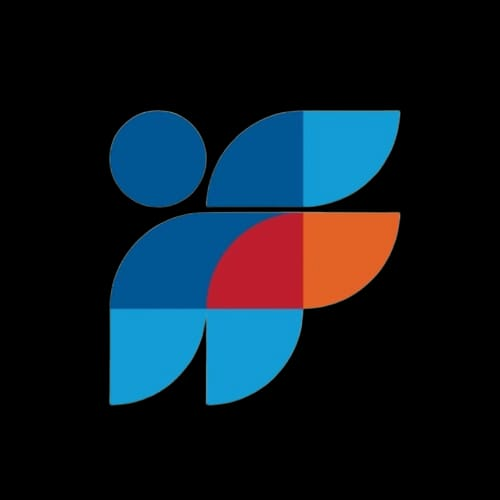

HMIF (Himpunan Mahasiswa Informatika) adalah organisasi kemahasiswaan di Universitas Multimedia Nusantara yang menjadi wadah bagi mahasiswa Teknik Informatika untuk mengembangkan potensi akademik maupun non-akademik.
Di sini, anggota belajar mengenai kepemimpinan, kerja sama tim, serta memperdalam ilmu di bidang teknologi informasi melalui berbagai program kerja kreatif dan inovatif.
Kembali ke Portofolio